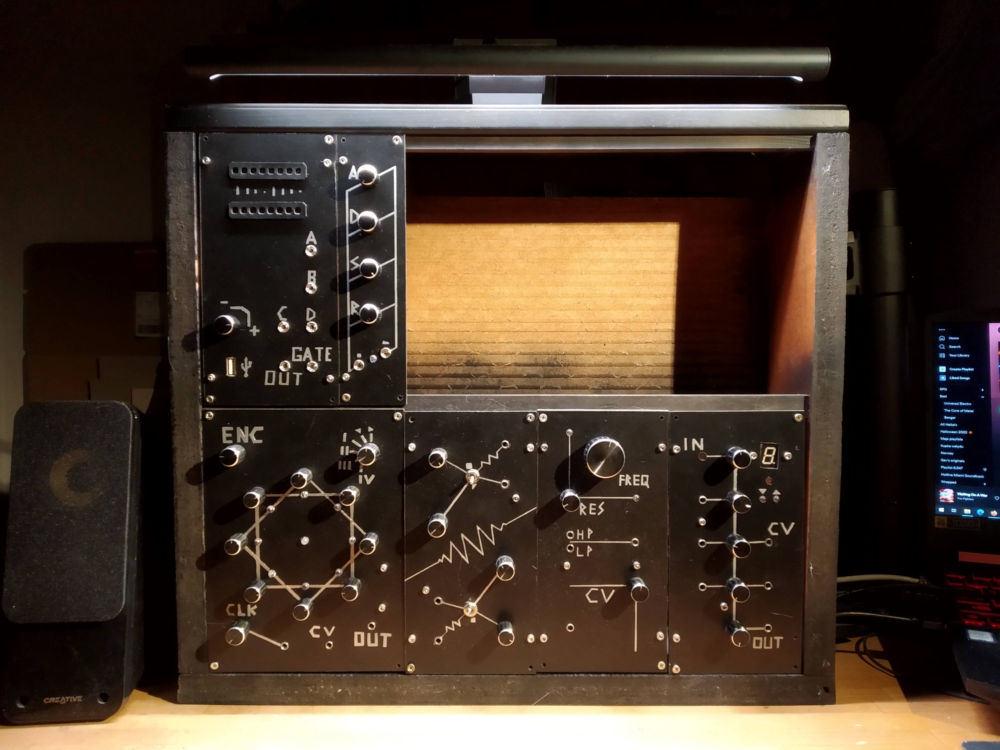

MODULAR
Analogowy syntezator modularny w formacie Kosmo 
Na start, co to jest syntezator modularny?
Syntezator modularny to instrument muzyczny, który umożliwia tworzenie dźwięków poprzez łączenie różnych modułów elektronicznych. Moduły te wykonują różne funkcje, takie jak generowanie fal dźwiękowych, modyfikowanie ich kształtu, kontrolowanie głośności, itp.
Syntezatory modularne pozwalają użytkownikom na tworzenie niestandardowych i unikalnych dźwięków poprzez łączenie różnych modułów w różnych konfiguracjach. Użytkownik może również zmieniać ustawienia modułów w czasie rzeczywistym, co pozwala na interaktywne eksperymentowanie z dźwiękami.
Dlaczego rozpocząłem ten projekt?
Odpowiedź jest bardzo prosta - na początku 2021 roku naoglądałem się przygód Sama z LMNC, i strasznie chciałem mieć taką maszynę jak on.
Nieco więcej o motywacji i założeniach:
Rozpoczynając ten projekt wiedziałem dobrze jakim ogromem pracy jest stworzenie syntezatora wielkości tego od LMNC i miałem świadomość że nie warto bez doświadczenia porywać się na takie zadanie. Nie byłem AŻ TAK zdeterminowany, żeby poświęcić na to parę następnych lat życia. Moim celem było zobaczyć jak mi się będzie budować tego typu urządzenia i czy dźwięki jakie z nich wyciągnę, będą mnie motywować do dalszej pracy. Na początek postanowiłem stworzyć jeden moduł, potem następny i następny. Był to w zasadzie projekt bez celu - albo raczej to droga była celem. Dlaczego? Bo nigdy nie grałem na żadnym instrumencie i nie spodziewałem się, że jak już zbuduję swój syntezator, będę w stanie na nim grać. Wiedziałem jednak że budując go będę się dobrze bawił i nauczę się bardzo wiele o elektronice analogowej, z którą w dzisiejszych czasach ciężko się spotkać. A może jak już będę miał instrument to nauczę się na nim grać?
Jak wyszło?
Gra! Aktualnie projekt zatrzymałem na etapie, gdzie osiągnąłem kompletny, muzykalny instrument. Ma 6 modułów, które wystarczają by po podpięciu do keyboardu konstrukcja służyła za monofoniczny syntezator z przyjemną gamą dziwnych efektów dźwiękowych. Z definicji syntezator modularny nie jest nigdy skończony, ponieważ zawsze można dokładać kolejne moduły, jednak kiedyś trzeba przerwać i zająć się innymi rzeczami. Mimo to planuje w przyszłości dokładać kolejne moduły, na które już mam pomysły. Jak wyszły konkretne moduły - co działa a co nie całkiem opiszę w kolejnych rozdziałach.
Mój zmieniony format Kosmo
Jako punkt wyjściowy jeśli chodzi o ustalanie standardowego wyglądu moich modułów przyjąłem format Kosmo, jednak trochę go pozmieniałem.
- Wysokość modułu: 20cm
- Szerokość modułu: wielokrotność 5cm
- Złącze: mini jack (obecnie łatwiej dostępne niż duże jack'i w Kosmo)
- Wygląd: czarny panel, srebrne ręcznie rysowane opisy
- Panel: spienione PCV (tanie i łatwe w obróbce), od tyłu usztywnione profilami aluminiowymi
- Napięcia zasilania: -12V, GND, +5V, +12V
- Napięcie CV: 0 - 5V
- Napięcie sygnału: 10Vpp (-5V - +5V)
Pierwsze kroki 04.2021
Pierwszym co zbudowałem w ramach tego projektu był Super Simple Oscilator. Jest to oscylator, złożony z jednego tranzystora, kondensatora i paru rezystorów. Produkuje bliżej nieokreśloną falę, która brzmi... jakoś.
Mimo wątpliwych właściwości muzycznych, stworzenie czegoś co robi hałas było bardzo satysfakcjonujące. Ten układ nie był przeznaczony jako moduł do ostatecznego instrumentu - w Modularze wylądował inny (wiele lepszy) oscylator.
Na płytce umieściłem 2 takie układy, jak i filtr dolnoprzepustowy i regulację głośności. Do kompletu, na szybko złożyłem prosty sequencer oparty na Arduino, żeby dało się zagrać jakąś melodyjkę. Efekt widać na filmiku. Jako że ten oscylator to nie jest VCO, żeby kontrolować go sequencerem, musiałem wykorzystać diodę i fotorezystor, który zastąpił normalnie regulujący ton potencjometr.

Sequencer 05.2021
Pierwszym modułem, który miał znaleźć się na ostatecznym Modularze był sequencer. Konstrukcja ta też była inspirowana projektem LMNC, jednak uprościłem oryginalny projekt, jako że nie potrzebowałem wszystkich jego funkcji.
8 potencjometrów zadaje wartości napięcia wyjściowego każdego z 8 kroków sekwencji, a Arduino przełącza kolejno między nimi. Za pomocą przełącznika trybów (w prawym górnym rogu panelu) można zmieniać kierunek kroków i zatrzymywać ich zmianę. Pozostałe pozycje przełącznika na razie nie są wykorzystane. Enkoder w lewym górnym rogu pozwala ręcznie zmieniać kroki, a jego wciśnięcie chwilowo zatrzymuje sekwencję. Na dole znajduje się pokrętło szybkości zegara jak i opcjonalne wejście do synchronizacji z sygnałem zewnętrznym.
Dla tego modułu pierwszy raz robiłem panel. Opiszę tutaj ten proces, jako że dla wszystkich kolejnych modułów był on zasadniczo taki sam. Najpierw rozkład elementów na panelu jak i szkic opisów zrobiłem na kartce (w pełnej skali). Następnie wszystkie opisy (dotychczas ołówkiem, bez grubości) pogrubiłem markerem, aby nadać liniom stałą szerokość. Później nakleiłem taśmą dwustronną tą kartkę na płytę spienionego PCV i wyciąłem kształt modułu. Opisy wyciąłem nożem w papierze po zewnętrznym obrysie markera, by odsłonić plastik. Następnie wywierciłem wszystkie otwory na potencjometry i złącza. Na całość naniosłem 3 warstwy sprayu: biały podkład, czarny matowy i srebrny. Podkład zapewnia dobrą przyczepność farby a czarny (powinien być błyszczący najlepiej) sprawia że srebrny na nim bardziej błyszczy. Później można zdjąć papier i zacząć montować potencjometry. Późniejsze moduły od tyłu dodatkowo usztywniałem, ale ten akurat jest na tyle szeroki, że plastik się nie wygina.

Zasilacz 05.2021
Zaraz po ukończeniu sequencera zabrałem się za układ, który był niezbędny do dalszej pracy, czyli zasilacz dualny. Jest wiele sposobów na budowę tego typu układów, ja zdecydowałem się na taki, który bazuje na stabilnym zasilaniu DC z którego generuje parę napięć +12V, -12V. Oszczędziło mi to operowania na 230V oraz wysoce prawdopodobnej śmierci.
Głównym wyzwaniem przy projektowaniu dualnego zasilacza jest jego ujemna część, jako że dodatnie napięcie można uzyskać z dowolnego regulatora zakupionego w sklepie. Miałem takie niebieskie płytki oparte o regulator LM2596 (które regulowały dodatnie napięcie) i to ich planowałem użyć do dodatniej strony zasilacza. Ujemne napięcie chciałem uzyskać z tego samego chipa, tylko z inną płytką go otaczającą. Początkowo, planowałem stworzyć układ otaczający ten regulator samemu, w oparciu o schemat zapewniony przez producenta samego chipa, jednak coś mi nie działało (dalej nie wiem co). Wtedy zauważyłem, że podpinając "bokiem" niebieską płytkę (zwykłą dodatnią), uzyskuje się identyczny układ do tego, który próbowałem zbudować i powstaje ujemne napięcie. Schemat umieściłem na zdjęciu obok.
VCO (Voltage Controlled Oscylator) 06.2021
VCO jest kluczowym elementem każdego syntezatora. Pozwala generować falę o zadanej częstotliwości, która następnie może być przetwarzana przez pozostałe moduły urządzenia. Wybrany przeze mnie rodzaj oscylatora może generować falę piłokształtną lub prostokątną zależnie od ustawienia. Budowa tego układu była moim pierwszym większym spotkaniem z elektroniką analogową jak i lutowaniem obwodów na płytkach stripboard. Układu nie wymyśliłem samemu, a praktycznie bez zmian wykorzystałem świetny projekt VCO Moritza Kleina.
Układ jest oparty na przerzutniku Schmitta, który stanowi bazę oscylatora astabilnego. Nie będę się tutaj zagłębiał w szczegóły, bo Moritz Klein tłumaczy działanie całego układu o wiele lepiej niż ja bym umiał. Wprowadziłem do układu drobne zmiany wynikające z komponentów jakie miałem, plus uznałem, że nie potrzebuję wejścia PWM, więc je też pominąłem. Schemat obok jest już zmodyfikowanym przeze mnie układem. Na płytce stripboard umieściłem 2 identyczne układy. Layout jest całkowicie mój, jako że chciałem go dobrze rozumieć żeby wykryć ewentualne błędy. Tak samo postępowałem w kolejnych modułach - nawet jeżeli wykorzystywałem czyiś schemat, rozkład na płytce robiłem samemu.
Brzmienie modułu można usłyszeć na filmiku przy sequencerze (jak i wszystkich późniejszych). Oscylator gra super, po wyregulowaniu potencjometrów strojących V/oct, trzyma strój stosunkowo dobrze i można na nim grać keyboardem. Niestety obowiązuje to tylko na przestrzeni 2 oktaw (max 3), bo dalej pojawiają się nieliniowości (nuty rozjeżdżają się nawet o cały ton). Bardziej problematyczne były tylko potencjometry na panelu. Te których używałem na początku (widać je na zdjęciach) w losowych momentach zaczynały się psuć - ich piny zaczynały się rozłączać co powodowało skoki i zmiany napięcia zadającego ton oscylatora. Jest to problem ze wszystkimi tego typu potencjometrami (z metalową obudową) i ostatecznie stopniowo musiałem je wymieniać na inne (takie zielone - są widoczne w późniejszych modułach).


VCF (Voltage Controlled Filter) 07.2021
Filtr jest najprostszym sposobem na przetwarzanie dźwięku w syntezatorze. Najczęściej wykorzystywany jest filtr dolnoprzepustowy, który wygładza dźwięk wychodzący z oscylatora obcinając wysokie częstotliwości. Filtr który tutaj zaimplementowałem pierwotnie pochodzi z ikonicznego syntezatora Korg MS20 i jest bardzo popularną konstrukcją. Ma on funkcję filtra górnoprzepustowego, dolnoprzepustowego a także kontrolę rezonansu, która pozwala uzyskać interesujące tony. Konkretna wersja układu którą wykorzystałem pochodzi od Réne Schmitz'a, który wprowadził parę zmian unowocześniających ikoniczny filtr.
Obudowa 10.2021
Obudowę syntezatora zrobiłem w zasadzie ze śmieci. Było to dosyć celowe - chciałem żeby całość miała garażowy, niedoskonały wygląd. Konstrukcja powstała z pociętego blatu starego stołu od babci, a tył jest górną okleiną ikonicznego stołu Ikea LACK (został znaleziony na śmietniku). Całość została pomalowana czarnym matowym sprayem. Moduły są przykręcane do obudowy śrubami do drewna, wkręcanymi bezpośrednio w przednie deseczki. Obudowa dodatkowo wyposażona jest w świecący wyłącznik i gniazdo DC 5.5x2.1mm.
Wymiary wewnętrzne obudowy to 45.5cm x 40.7cm x 9.4cm, co pozwala umieścić w niej 2 rzędy dwa rzędy modułów, 7 x 5cm segment w każdym.
Mixer + Tuner + VCA (Voltage Controlled Amplifier) 02.2022
Jak sama nazwa wskazuje, wiele się dzieje za panelem tego modułu. Ma on 3 główne funkcje:
- Tuner - 8-segmentowy wyświetlacz pokazuje nutę, jaka odpowiada częstotliwości aktualnie wychodzącej z modułu, a dwie diody wskazują, w którą stronę należy skorygować ton by trafić w najbliższą poprawną nutę.
- Mixer - 4 kanały wejściowe są miksowane w jeden sygnał wyjściowy, co pozwala uzyskać jedno wyjście z wielu ścieżek, którymi podąża dźwięk w syntezatorze.
- VCA - Wzmocnienie 2 dolnych kanałów mixera można sterować napięciem. Pozwala to na przykład przycinać sygnał wyjściowy modułem ADSR (opisanym dalej).
Jest to pierwszy z modułów, który został w znacznej części zaprojektowany przeze mnie. Jako VCA wykorzystałem układ Electricdruida, który przerobiłem żeby pasował do reszty. Resztą jest prosty mixer inspirowany mixerem LMNC i tuner oparty na Arduino Nano, inspirowany Performance VCO od LMNC.
Najbardziej interesującym elementem modułu moim zdaniem jest tuner. LMNC swój umieścił w VCO, jednak ja nie chciałem tego robić, ponieważ jeżeli rozszerzałbym syntezator o więcej oscylatorów, nie potrzebowałbym tunera przy każdym. Mimo że czasem jest to przydatna funkcja, wymaga to dużej ilości dodatkowej elektroniki. Postanowiłem więc umieścić tuner w mixerze - dzięki temu można nastroić każdy oscylator, wyciszając na chwilę wszystkie pozostałe. Jako że filtry ani wzmacniacze nie zmieniają bazowej częstotliwości, można stroić nawet oscylator z efektami.
Arduino mierzy częstotliwość sygnału i porównuje go z tabelą wszystkich częstotliwości nut. Na tej podstawie wyświetla informacje na wyświetlaczu i diodach. Kod Arduino to tunera znajduje się tutaj.
Jeśli chodzi o podłączenie Arduino do wyświetlacza, to tak się składa że da się to tak przylutować, żeby były one po przeciwnych stronach płytki i stykały się pinami. Ucinając niektóre piny, do się sprytnie uniknąć ciągnięcia dużej ilości kabli. Niestety Arduino, którego używałem miało spalone parę pinów, więc musiałem trochę pokombinować żeby je zastąpić i w efekcie jest trochę nieładnych przewodów.
Dolny VCA ma nieco zmieniony układ potencjometru. Zamiast GND przy dolnej nóżce, ma -12V przylutowane przez serię rezystorów (10K + 5.1K + 3.3K). Dzięki temu dzielnik na nim oparty schodzi nieco na ujemne napięcia (ok. -0.5V). Pozwala to skorygować nie całkiem domykającą się bramkę mojego ADSRa. Lepiej by było rozwiązać po stronie envelope'a, ale tak jest wiele łatwiej.
Jak można zauważyć na zdjęciu, moduł nie jest całkiem skończony. Brakuje gniazda jack w pierwszym kanale, bo kiedy go budowałem skończyły mi się. Od tego czasu nigdy nie miałem potrzeby korzystać z 4 kanałów na raz, więc ciągle go nie zainstalowałem. cała reszta tego kanału jest, brakuje tylko gniazda. Planowałem też dodać przycisk do tunera (do zmiany trybów czy coś), ale nie miałem na razie potrzeby, więc została dziura pod wyświetlaczem.
ADSR (generator obwiedni) 09.2022
Moduł ADSR (Atack-Decay-Sustain-Release) pozwala na kontrolowanie czasu trwania, głośności i charakteru dźwięku. Pozwala on na ustalenie, jak szybko sygnał dźwiękowy nabiera na głośności (faza ataku), jak długo trwa utrzymanie stałej głośności (faza utrzymania), jak szybko dźwięk wygasa (faza wygasania)
Dzięki generatorowi obwiedni można kontrolować dynamikę dźwięku, co pozwala na tworzenie bardziej złożonych i interesujących brzmień.
Układ elektryczny tego modułu to "Fastest Envelope in the West" Réne Shmitz'a. Był to idealny układ dla mnie, jako że chciałem mieć pełny zakres możliwości ADSR (wiele DIY modułów obwiedni są tylko 'AR'). Przy okazji nauczyłem się nieco jak działa ikoniczny chip 555 (w moim przypadku 7555).
Jako że nie miałem potencjometrów 2M2 (ani żadnych porównywalnie dużych) a właśnie nakupiłem dużo 10K, przerobiłem układ pod te właśnie komponenty (według porad autora).
Niestety, po tak dużej zmianie wartości komponentów, mam problem z release'm. Kondensator (w moim przypadku bardzo przerośnięty) nie chce się do końca rozładowywać, przez co zawsze po zakończeniu obwiedni mam ~300mV na wyjściu, które dopiero powoli opada (nawet do paru minut). Powodem tego jest dioda, w gałęzi 'release', bo jak napięcie na kondensatorze spadnie poniżej 0.7V przestaje przewodzić i reszta musi uciec inną drogą (nie wiem którędy, ale jakoś to się rozładowuje powoli - dla dużego kondensatora nie wystarczająco szybko). Jest to problem, jeżeli używa się tego modułu do sterowania VCA, bo bramka się nie domyka i syntezator cały czas cicho gra. Bez wielkich potencjometrów (i przelutowywania połowy rezystorów) nie mogę tego naprawić z wewnątrz układu, więc w mixerze na jednym z kanałów dałem możliwość korekcji tego offsetu (opisane w rozdziale o mixerze). Teraz mam taki release dodatkowy tylko, bo nawet przy odpowiedniej gałce skręconej na maxa, jest sekunda cichego buczenia. Ale to już jest do zniesienia.
Jeśli chodzi o wygląd, jest to mój ulubiony moduł. Pierwszy raz też w jego przypadku zastąpiłem plastikową szynę usztywniającą aluminiowym profilem, co jest o wiele sztywniejsze i bardziej eleganckie. Dodatkowo można do niej zamocować płytkę, która w tym module nie zmieściłaby się na płasko.
Interface MIDI + Looper 10.2022
Dosyć szybko po tym jak zbudowałem sequencer, odkryłem że nie będzie on wystarczającym modułem wejściowym (programującym syntezator). Jest on niewygodny i wolny w użyciu, jako że każdy dźwięk trzeba stroić od zera. Zamarzył mi się solidny looper z wejściem z klawiatury. Trochę mi zajęło zanim wymyśliłem jak chciałbym to zrobić (na początku chciałem rozebrać melodykę i zrobić z tego klawiaturę), ale znalazłem właściwe rozwiązanie. Cały looper jest wbudowany w moduł interface'u MIDI i przyjmuje MIDI po USB z dowolnego keyboardu. Projekt jest cały czas nie skończony, na razie moduł tylko przekazuje nuty, nie ma loopera. Ale to tylko kwestia sofrware.
Zacznijmy od MIDI po USB. Jest to wredny temat, bo żeby odbierać je od keyboardu, trzeba być Hostem USB. Nie znalazłem płytki, która by to potrafiła i jednocześnie miała bibliotekę do MIDI. Na szczęście jest shield do Arduino Pro Mini 3.3V, który to obsługuje, więc z niego skorzystałem i po odrobinie kombinacji udało się to uruchomić. Podpinam go do Nano, bo chciałem łatwo móc wgrywać nowe programy, a i tak musiałem to robić na logice 5V z powodu innych peryferii.
Jako że moduł będzie napakowany softowymi funkcjami po brzegi, chciałem dać mu sensowny wyświetlacz. A jako że chciałem zrobić to trochę dziwnie, dałem mu 2 rzędy po 8 NeoPixeli. Dzięki temu można wyświetlać 16 kroków sekwencji z przesuwającym się kursorem. Jeszcze nie wiem czy to w ogóle wykorzystam, czy będę ich tylko używał do sygnalizowania trybów pracy i ustawień.
Wyjścia modułu są też jeszcze work in progress. Na razie mam wyprowadzony jeden przetwornik DAC i jedną bramkę, co pozwala grać oscylatorami. Pozostałe wyjścia (A-D) pozostawiłem na przyszłe zastosowania. Planuję dołożyć jeszcze jeden DAC, żeby móc grać dwie ścieżki na raz. Reszta możliwe że pójdzie na triggerowane modułu perkusyjnego, który kiedyś chcę dobudować. Ale jeszcze nie wiem jak będzie to wyglądało.